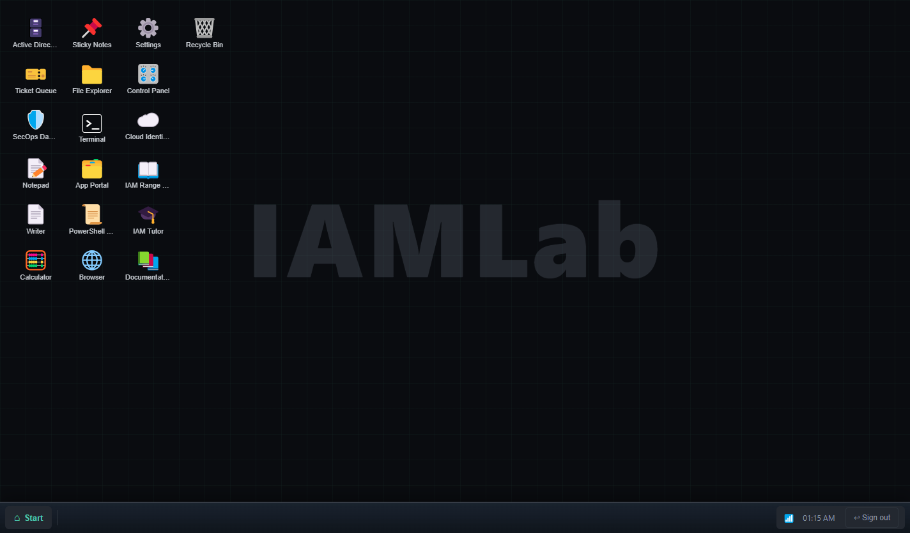
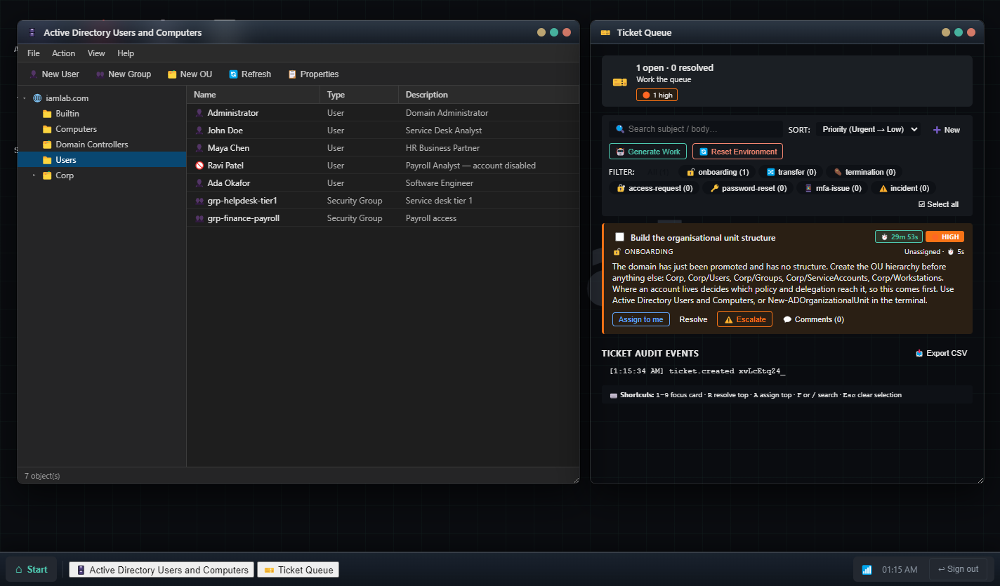
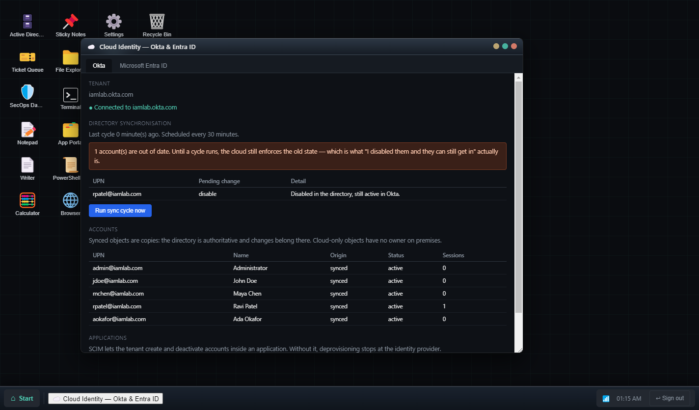
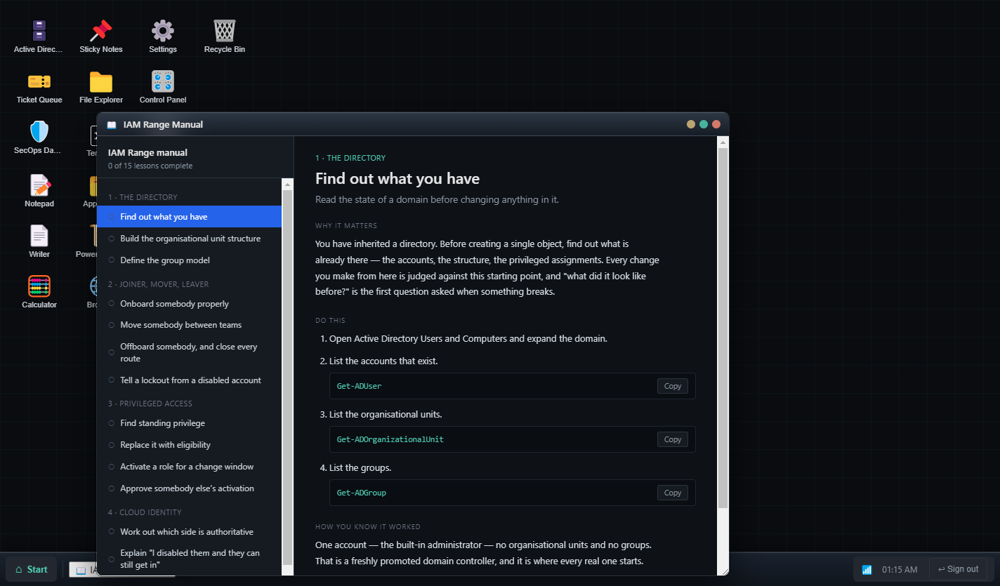
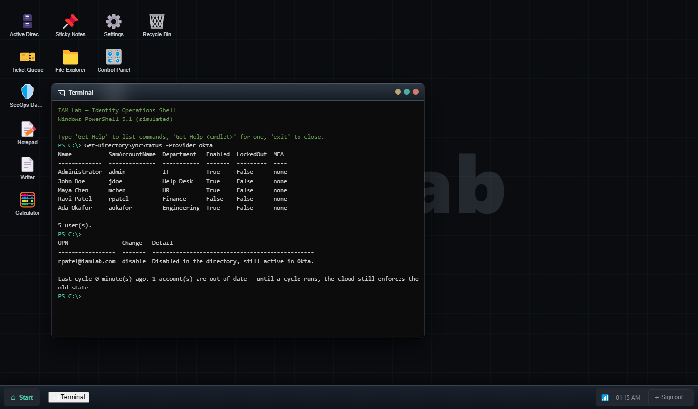

An empty Active Directory,
and everything that goes wrong in one.
IAM Range is a workstation you install. It ships one administrator account and no structure — the same thing you would find on a freshly promoted domain controller. Build it out, work the tickets it raises, and find out what breaks when you get it wrong.

What you get on signing in: a clean workstation. Nothing on this page is a mockup — every screenshot is captured from the running application.
What you actually do
The work, in the order it happens
The domain starts empty because being handed a working directory teaches nothing about how it got that way. Each stage unlocks the next, and the ticket queue only raises work the environment can currently support.
Build the structure
Organisational units are administrative boundaries, not folders — you delegate over them and link policy to them. Get the tree wrong and every reorganisation becomes directory work.
New-ADOrganizationalUnit -Name CorpStaff the domain
Create people and they appear on the sign-in screen. Sign in as one and the desktop changes: Help Desk gets Active Directory, Finance does not. An account that exists but cannot authenticate is not a finished onboarding.
New-ADUser -SamAccountName jdoeWork the queue
Lockouts, transfers, leavers who still have access, standing admin rights nobody approved. The state each ticket describes is made true before it is raised, so the evidence is genuinely there to be found.
Get-DirectorySyncStatusProve it worked
The audit log records what was attempted; the state tells you what took effect. Every lesson ends in the check, because "how do you know?" is the question that separates candidates.
Get-ADPrincipalGroupMembershipWrite it up
Incident report, access review summary, offboarding checklist, change record. Being able to explain what you did is the part interviews actually test.
The estate
Tools wired to one directory
A change in one place shows up in the others, because there is only one directory behind all of them. The consoles and the shell run the same code, including the refusals.
| Application | What it does |
|---|---|
| Active Directory Users and Computers | The snap-in, backed by a real directory. The tree shows what exists and nothing that does not. |
| PowerShell | A working subset of the AD cmdlets plus script templates for bulk work — New-ADUser, Add-ADGroupMember, Unlock-ADAccount. |
| Privileged Identity Management | Eligible versus active, time-bound activation, approvals that refuse self-approval, and standing privilege you have to go and find. |
| Cloud Identity | Okta and Entra ID with a sync cycle that is not instant, SCIM switched off by default, and soft matches that fail the way real ones do. |
| Ticket Queue | Work raised for the state your domain is actually in, with the evidence made true first. Optionally written by a local language model. |
| Manual and Documentation | Sixteen guided lessons and thirteen reference articles, each ending in the interview question it prepares you for. |
| IAM Tutor | Asks before it tells, answers from the written reference, and names the article it used so you can check it. |
| Writer, SecOps, App Portal, Control Panel, Explorer | The rest of a workstation, so the lab is a desk rather than a form. |
Screens
What it looks like
Captured from the running application at 1440 × 900.




Real output. The refusal messages are the lesson.
Optional
A tutor that cites its sources
Everything above works offline with nothing else installed. If you also run Ollama, the tutor composes answers and the ticket queue writes its own prose — locally, on your machine, with nothing sent anywhere.
It asks before it tells, and names the article it used — a small local model gets details wrong, and an answer you can open and check is worth more than a confident one. Without Ollama the tutor quotes the documentation instead. That is narrower, not broken, and it is the experience most people will have.